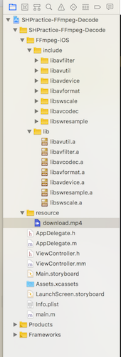
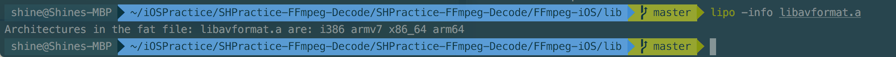
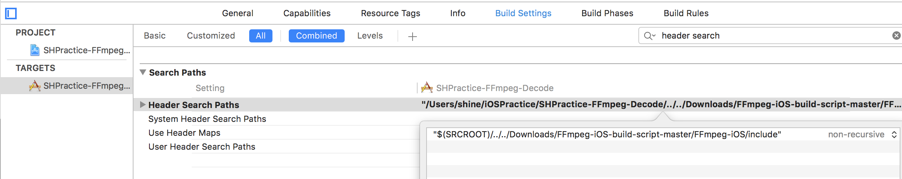
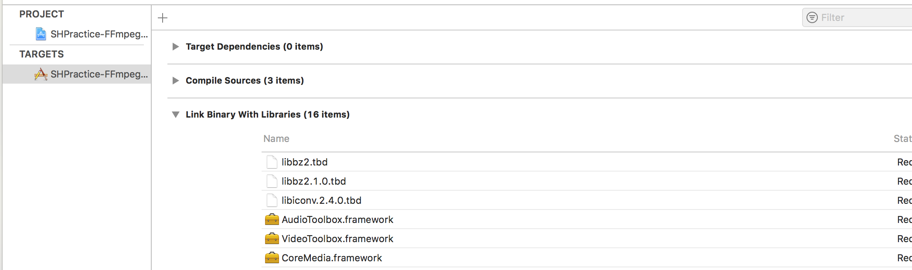
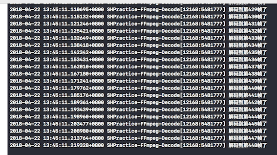
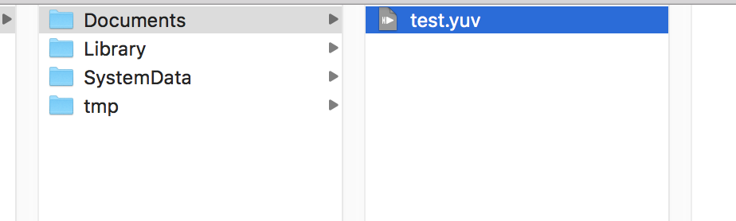
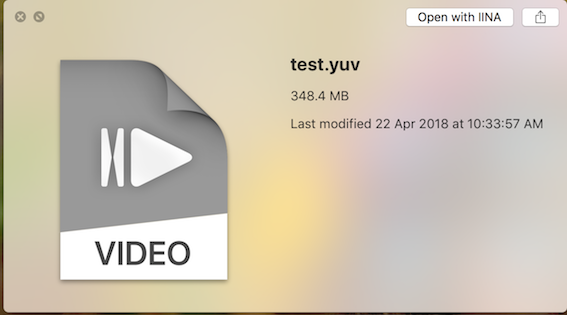

最近在开始学习音视频领域，音视频开发不可避免要接触到强大的FFmpeg库。今天要写的是在iOS平台上实现基于FFmpeg视频的解码。其实记住主要几个流程就好了，然后自己去摸索实现，其实没有多大难度。
首先简单描述下FFmpeg视频解码需要的步骤:
一. 注册组件 (编码器，解码器…都是FFmpeg中一系列的组件)
avregister_all()
二. 打开封装格式 (也就是打开文件,例如mp4,mov…文件)
avformat_open_input()
三. 查找视频流信息
avformat_find_stream_info()
四. 查找视频解码器
1
2
3
4
| 查找视频解码器需要这三步:
获取视频流的索引
根据视频流的索引获取到解码器上下文
根据视频解码器上下文,获得编码器id,然后根据编码器id获取到对应的编码器
|
五. 打开视频解码器
avcodec_open2()
六. 读取视频压缩数据 (循环读取)
七. 视频解码,得到视频的像素数据
八. 解码完毕,关闭资源
如果需要解码成指定的格式，比如你要将一个MP4封装格式的视频解码成YUV420格式的像素格式, 我们还需要一个步骤，就是转码，因为视频解码出来的像素格式可能不是我们想要的格式。如果是转码到指定的YUV420P，还需要几个步骤
一. 初始化一个格式转换器上下文SwsContext
二. 开辟转换YUV420p格式需要的空间
三. 开始转码
接下来按照上面的步骤具体的去实现:
打开Xcode新建一个iOS工程，导入FFmpeg脚本库编译出来的静态库和头文件,以及本地准备好的mp4资源.

我是用iPhone7 真机调试，所以用lipo-info命令检查静态库，是不是支持arm64格式，这里我们暂且用libavformat.a示范一下. 显示i386 armv7 x86_64 arm64,包含arm64架构说明脚本生成的静态库没问题.

修改Xcode Header Search Paths，链接到FFmpeg头文件的所在目录，简单的方式就是直接从左侧把include目录拽进框里就行了。

添加系统依赖库:CoreMedia.framework VideoToolBox.framework AudioToolBox.framework AVFoundation.framework libz.tbd libiconv.tbd libbz2.tbd libbz2.1.0.tbd libiconv.2.4.0.tbd

修改项目中的一个.m文件为mm后缀, 因为需要编译C++文件，所以需要这一步. 我将ViewController.m 改为 ViewController.mm
引入解码需要的头文件，这里一定要记得将FFmpeg头文件的引用包在extern “C”里，否则会编译不过.
1
2
3
4
5
6
7
8
| extern "C"{
#import "avformat.h"
#import <libavcodec/avcodec.h>
#import <libavformat/avformat.h>
#import <libswscale/swscale.h>
#import <libavutil/imgutils.h>
}
|
在viewDidLoad里加上一句av_register_all()。 看是否能编译过，如果能编译成功，说明引入ffmpeg库头文件已经没问题。可以开始真正的写解码逻辑了:
首先在ViewController里新建一个方法，接受两个字符串参数inPath和outPath，分来代表输入的mp4文件路径和输出的yuv格式文件路径.
1
2
| - (void)ffpmegDecodeVideoInPath:(NSString *)inPath outPath:(NSString *)outPath{
}
|
开始解码步骤:
第一步:注册组件
第二步:打开封装格式文件
1
2
3
4
5
6
7
8
9
| int operationResult = 0;
AVFormatContext *avformat_context = avformat_alloc_context();
const char *url = [inPath UTF8String];
operationResult = avformat_open_input(&avformat_context, url, NULL, NULL);
if(operationResult != 0){
NSLog(@"打开文件失败");
return;
}
|
第三步:查找视频流
1
2
3
4
5
6
| operationResult = avformat_find_stream_info(avformat_context, NULL)
if(operationResult != 0){
// av_log(NULL, 1, "查找视频流失败")
NSLog(@"查找视频流失败")
return
}
|
第四步:查找解码器
1
2
3
4
5
6
7
8
9
10
11
| int videoStremIndex = -1;
for(int i = 0 ; i < avformat_context->nb_streams; i++){
if(avformat_context -> streams[i] ->codec -> codec_type == AVMEDIA_TYPE_VIDEO){
videoStremIndex = i;
NSLog(@"获取到了视频流");
break;
}
}
AVCodecContext *avcodec_context = avformat_context -> streams[videoStremIndex] -> codec;
AVCodec *decodeCodec = avcodec_find_decoder(avcodec_context -> codec_id);
NSLog(@"解码器为%s",decodeCodec -> name);
|
第五步:打开解码器
1
2
3
4
5
6
| operationResult = avcodec_open2(avcodec_context,decodeCodec, NULL)
if(operationResult != 0){
// av_log(NULL, 1, "打开解码器失败")
NSLog(@"打开解码器失败")
return
}
|
第六步:开始解码
1
2
3
4
5
6
7
8
9
10
11
12
13
14
15
| AVPacket *packet = (AVPacket *)av_malloc(sizeof(AVPacket)); //读取的一帧数据缓存区
AVFrame *avframe_in = av_frame_alloc()
while (av_read_frame(avformat_context, packet) == 0) {
if(packet -> stream_index == videoStremIndex){ //如果是视频流
avcodec_send_packet(avcodec_context, packet)
operationResult = avcodec_receive_frame(avcodec_context, avframe_in)
if(operationResult == 0){ //解码成功
//其实这里我们就已经解码成功了
decodeIndex++
// av_log(NULL, 1, "解码到第%ld帧了",decodeIndex)
NSLog(@"解码到第%ld帧了",decodeIndex)
}
}
}
|
这里已经实现解码成功了,但是可能得到的解码结果并不是我们想要的格式yun420p, 因为像素格式也有很多种，比如yuv420P、yuv422p、yuv444p. 所以这里我们需要对解码后的格式统一转换成我们需要的yuv420。我们需要用到ffmpeg另一个库libswscale. 来看代码:
上面已经提到了转码需要的几个步骤，直接上实现:
1
2
3
4
5
6
7
8
9
10
11
12
13
14
15
16
17
18
19
20
21
22
|
AVFrame *avframe_yuv420 = av_frame_alloc();
int bufferSize = av_image_get_buffer_size(AV_PIX_FMT_YUV420P, avcodec_context -> width, avcodec_context -> height, 1);
uint8_t *data = (uint8_t *)av_malloc(bufferSize);
av_image_fill_arrays(avframe_yuv420 -> data,
avframe_yuv420 -> linesize,
data, AV_PIX_FMT_YUV420P,
avcodec_context -> width,
avcodec_context -> height,
1);
SwsContext *sws_context = sws_getContext(avcodec_context -> width,
avcodec_context -> height,
avcodec_context -> pix_fmt,
avcodec_context -> width,
avcodec_context -> height,
AV_PIX_FMT_YUV420P,
SWS_BICUBIC,
NULL,
NULL,
NULL);
|
拿到了转码上下文和转码需要开辟的空间后，再回到解码的while循环中，每解码一帧数据，就对其进行转码，然后存入yuv格式到本地文件中.
1
2
3
4
5
6
7
8
9
10
11
12
13
14
15
16
17
18
19
20
21
22
23
24
25
26
27
28
29
30
31
| int y_size,u_size,v_size;
long decodeIndex = 0;
const char *outpath = [outPath UTF8String];
FILE *yuv420p_file = fopen(outpath, "wb+");
while (av_read_frame(avformat_context, packet) == 0) {
if(packet -> stream_index == videoStremIndex){
avcodec_send_packet(avcodec_context, packet);
operationResult = avcodec_receive_frame(avcodec_context, avframe_in);
if(operationResult == 0){
sws_scale(sws_context, avframe_in -> data, avframe_in ->linesize, 0, avcodec_context -> height, avframe_yuv420 -> data, avframe_yuv420 -> linesize);
y_size = avcodec_context -> width * avcodec_context -> height;
u_size = y_size / 4;
v_size = y_size / 4;
fwrite(avframe_yuv420 -> data[0], 1, y_size, yuv420p_file);
fwrite(avframe_yuv420 -> data[1], 1, u_size, yuv420p_file);
fwrite(avframe_yuv420 -> data[2], 1, v_size, yuv420p_file);
decodeIndex++;
NSLog(@"解码到第%ld帧了",decodeIndex);
}
}
}
|
解码过程完毕，最后关闭资源，释放内存.
1
2
3
4
5
6
7
| av_packet_free(&packet)
fclose(yuv420p_file)
av_frame_free(&avframe_in)
av_frame_free(&avframe_yuv420)
free(data)
avcodec_close(avcodec_context)
avformat_free_context(avformat_context)
|
最后在ViewDidLoad里去调用解码的方法:
1
2
3
4
5
6
7
8
9
10
| - (void)viewDidLoad {
[super viewDidLoad];
NSString *file = [[NSBundle mainBundle] pathForResource:@"download" ofType:@"mp4"];
NSString *docPath = [NSSearchPathForDirectoriesInDomains(NSDocumentDirectory, NSUserDomainMask, YES) lastObject];
NSString *outFile = [docPath stringByAppendingPathComponent:@"test.yuv"];
[self ffpmegDecodeVideoInPath:file outPath:outFile];
}
|
编写代码完成，我们在真机上运行一遍. 观察控制台打印出的日志

可以看到解码了448帧数据，说明是解码成功了。我们来看下沙盒目录，验证下yuv420格式文件是不是也已经写入成功了。通过xcode的device面板我们找到该app,download container将数据导出到Mac里，观察document目录


可以看到存在test.yuv文件, 从之前2.5M大小的MP4文件解码后变成了348M,可见编码是有多么重要. 然后我们尝试用ffplay去播放这个文件. 命令为
1
| ffplay -f rawvideo -pix_fmt yuv420p -video_size 1280x720 /Users/shine/Desktop/test.yuv //我已经将视频文件拷贝到Desktop目录了
|
至此，已经成功将一个MP4视频文件解码成yuv420p原像素数据.
最后附上完整的代码实现ViewController.mm
1
2
3
4
5
6
7
8
9
10
11
12
13
14
15
16
17
18
19
20
21
22
23
24
25
26
27
28
29
30
31
32
33
34
35
36
37
38
39
40
41
42
43
44
45
46
47
48
49
50
51
52
53
54
55
56
57
58
59
60
61
62
63
64
65
66
67
68
69
70
71
72
73
74
75
76
77
78
79
80
81
82
83
84
85
86
87
88
89
90
91
92
93
94
95
96
97
98
99
100
101
102
103
104
105
106
107
108
109
110
111
112
113
114
115
116
117
118
119
120
121
122
123
124
125
126
127
128
129
130
131
132
133
134
135
136
137
138
139
140
141
142
143
144
145
146
147
148
149
150
151
152
153
154
155
156
157
158
159
160
161
162
163
164
165
166
167
168
169
170
171
172
173
174
175
176
177
178
179
180
181
182
|
#import "ViewController.h"
extern "C"
{
#import "avformat.h"
#import <libavcodec/avcodec.h>
#import <libavformat/avformat.h>
#import <libswscale/swscale.h>
#import <libavutil/imgutils.h>
}
@interface ViewController ()
@end
@implementation ViewController
- (void)viewDidLoad {
[super viewDidLoad];
NSString *file = [[NSBundle mainBundle] pathForResource:@"download" ofType:@"mp4"];
NSString *docPath = [NSSearchPathForDirectoriesInDomains(NSDocumentDirectory, NSUserDomainMask, YES) lastObject];
NSString *outFile = [docPath stringByAppendingPathComponent:@"test.yuv"];
[self ffpmegDecodeVideoInPath:file outPath:outFile];
}
- (void)ffpmegDecodeVideoInPath:(NSString *)inPath outPath:(NSString *)outPath{
int operationResult = 0;
av_register_all();
AVFormatContext *avformat_context = avformat_alloc_context();
const char *url = [inPath UTF8String];
operationResult = avformat_open_input(&avformat_context, url, NULL, NULL);
if(operationResult != 0){
NSLog(@"打开文件失败");
return;
}
operationResult = avformat_find_stream_info(avformat_context, NULL);
if(operationResult != 0){
NSLog(@"查找视频流失败");
return;
}
int videoStremIndex = -1;
for(int i = 0 ; i < avformat_context->nb_streams; i++){
if(avformat_context -> streams[i] ->codec -> codec_type == AVMEDIA_TYPE_VIDEO){
videoStremIndex = i;
NSLog(@"获取到了视频流");
break;
}
}
AVCodecContext *avcodec_context = avformat_context -> streams[videoStremIndex] -> codec;
AVCodec *decodeCodec = avcodec_find_decoder(avcodec_context -> codec_id);
NSLog(@"解码器为%s",decodeCodec -> name);
operationResult = avcodec_open2(avcodec_context, decodeCodec, NULL);
if(operationResult != 0){
NSLog(@"打开解码器失败");
return;
}
AVPacket *packet = (AVPacket *)av_malloc(sizeof(AVPacket));
AVFrame *avframe_in = av_frame_alloc();
AVFrame *avframe_yuv420 = av_frame_alloc();
int bufferSize = av_image_get_buffer_size(AV_PIX_FMT_YUV420P, avcodec_context -> width, avcodec_context -> height, 1);
uint8_t *data = (uint8_t *)av_malloc(bufferSize);
av_image_fill_arrays(avframe_yuv420 -> data,
avframe_yuv420 -> linesize,
data, AV_PIX_FMT_YUV420P,
avcodec_context -> width,
avcodec_context -> height,
1);
SwsContext *sws_context = sws_getContext(avcodec_context -> width,
avcodec_context -> height,
avcodec_context -> pix_fmt,
avcodec_context -> width,
avcodec_context -> height,
AV_PIX_FMT_YUV420P,
SWS_BICUBIC,
NULL,
NULL,
NULL);
int y_size,u_size,v_size;
long decodeIndex = 0;
const char *outpath = [outPath UTF8String];
FILE *yuv420p_file = fopen(outpath, "wb+");
while (av_read_frame(avformat_context, packet) == 0) {
if(packet -> stream_index == videoStremIndex){
avcodec_send_packet(avcodec_context, packet);
operationResult = avcodec_receive_frame(avcodec_context, avframe_in);
if(operationResult == 0){
sws_scale(sws_context, avframe_in -> data, avframe_in ->linesize, 0, avcodec_context -> height, avframe_yuv420 -> data, avframe_yuv420 -> linesize);
y_size = avcodec_context -> width * avcodec_context -> height;
u_size = y_size / 4;
v_size = y_size / 4;
fwrite(avframe_yuv420 -> data[0], 1, y_size, yuv420p_file);
fwrite(avframe_yuv420 -> data[1], 1, u_size, yuv420p_file);
fwrite(avframe_yuv420 -> data[2], 1, v_size, yuv420p_file);
decodeIndex++;
NSLog(@"解码到第%ld帧了",decodeIndex);
}
}
}
av_packet_free(&packet);
fclose(yuv420p_file);
av_frame_free(&avframe_in);
av_frame_free(&avframe_yuv420);
free(data);
avcodec_close(avcodec_context);
avformat_free_context(avformat_context);
}
- (void)didReceiveMemoryWarning {
[super didReceiveMemoryWarning];
}
@end
|